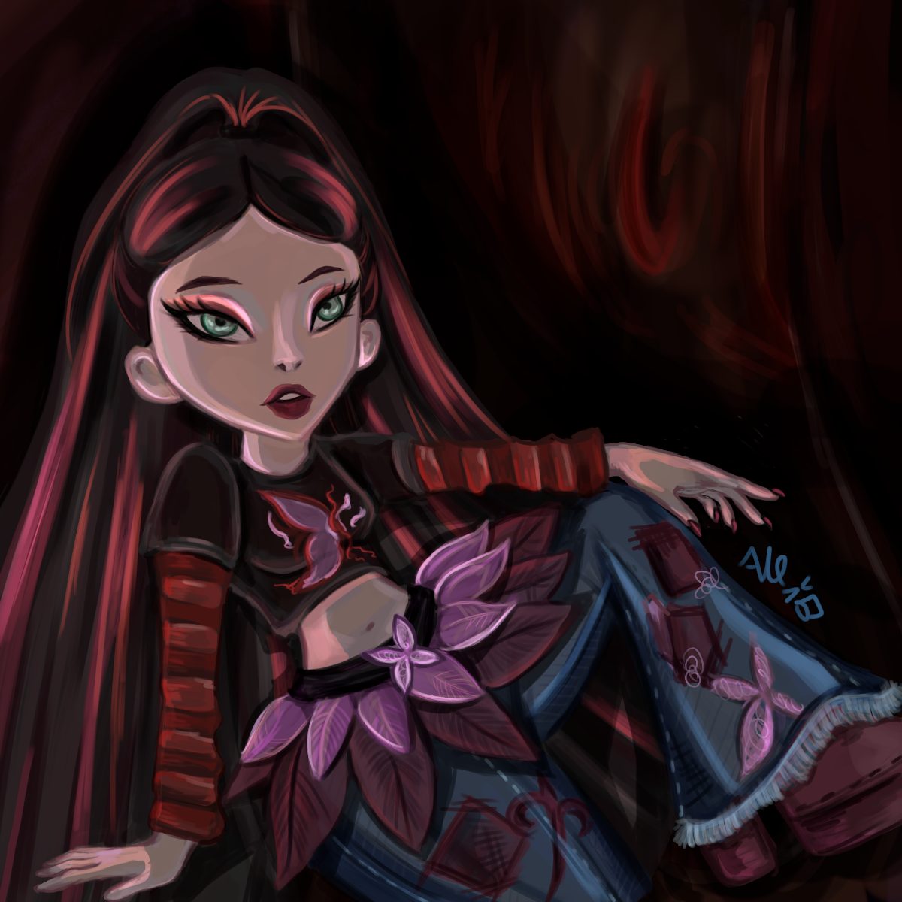
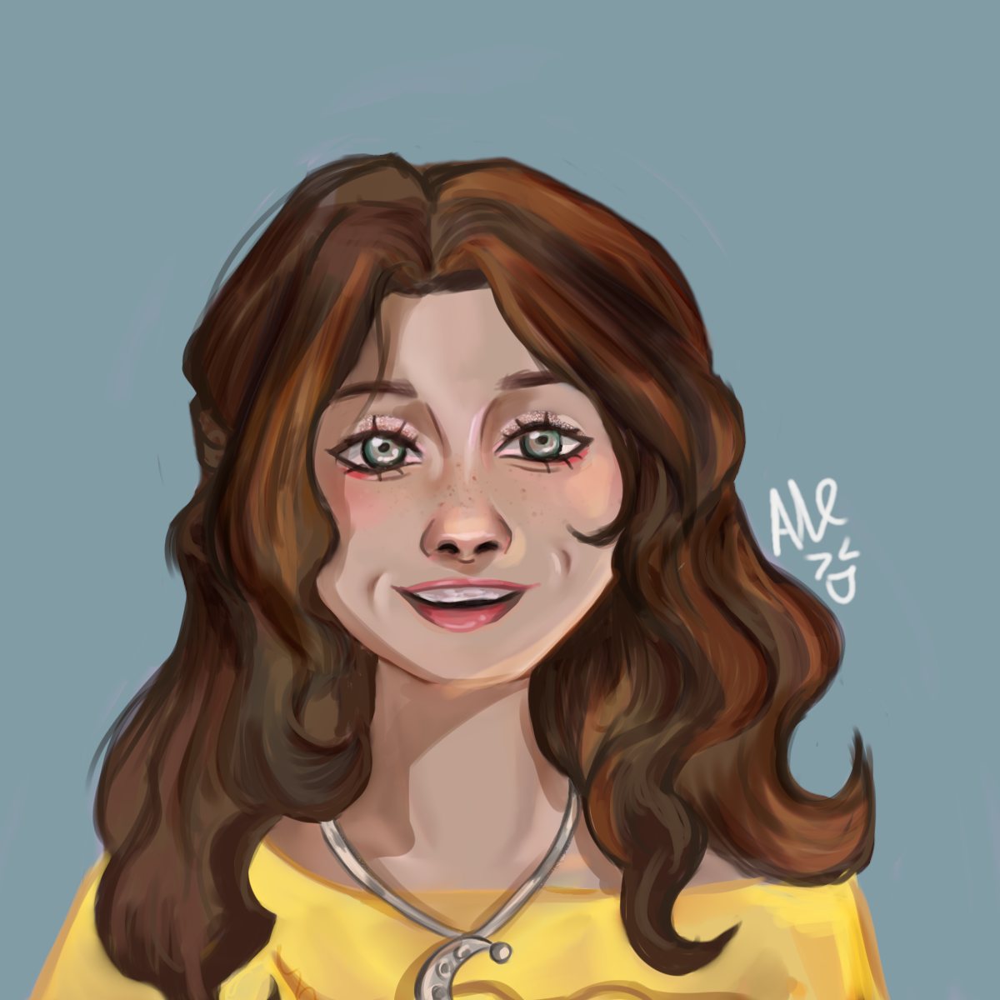
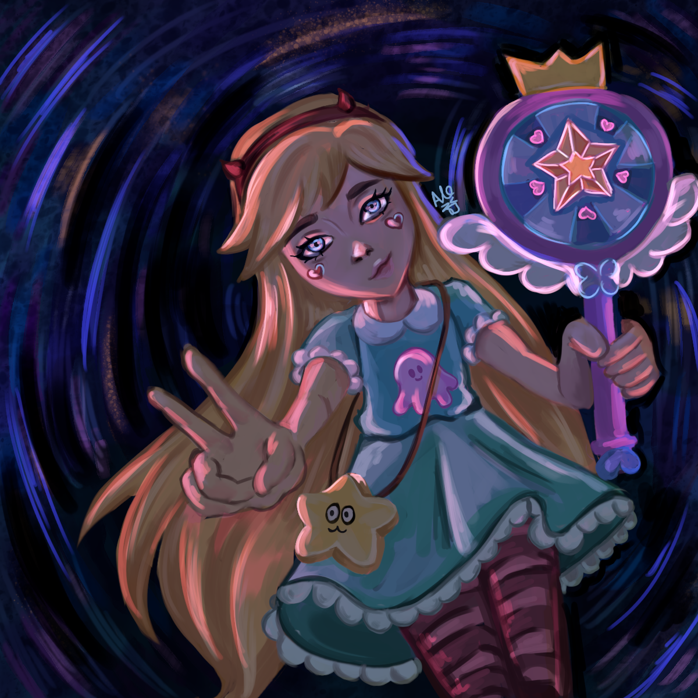
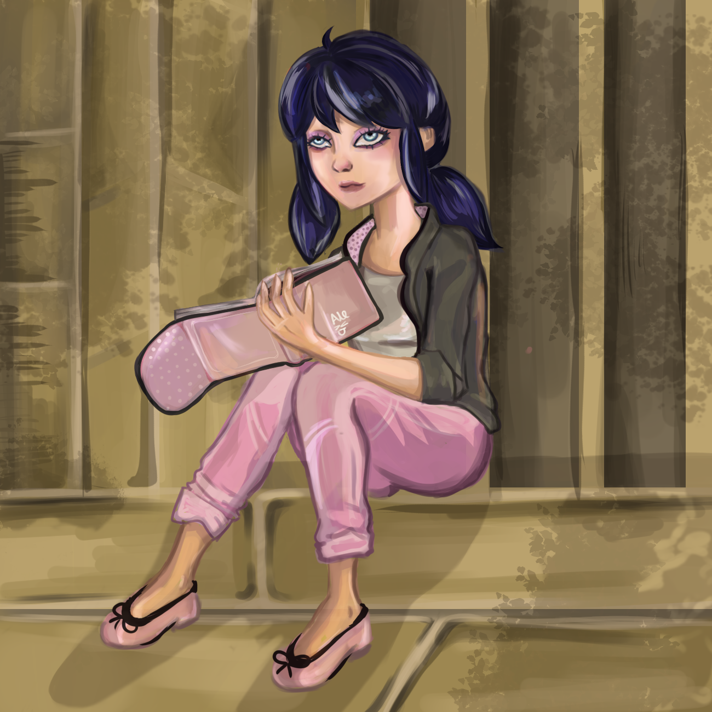
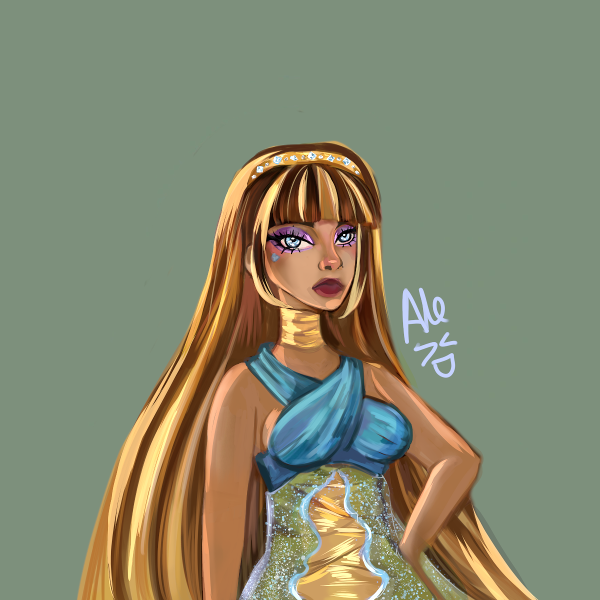

Drawing Details
- Time taken: 3 hours
- Tools: Krita
- Technique: Digital rendering
Illustration is one of my favorite creative hobbies. I enjoy experimenting with different styles, characters, and techniques. Here are some of the drawings I have created.
This illustration is fan art from the Bratz Fashion Pixiez movie. It depicts Lyna in her secret place. I enjoyed recreating the character and experimenting with lighting and rendering.

This drawing is fan art of Luna Valente, a character portrayed by Karol Sevilla. It was created digitally, and I focused on rendering the character's face, hair, and clothing.

This is one of my favorite illustrations. It is fan art of Star Butterfly from Star vs. the Forces of Evil. In this drawing, I experimented with shadows and lighting to make the scene more dynamic and visually engaging.

This illustration is fan art of Marinette from Miraculous Ladybug. It was a challenging drawing because anatomy and backgrounds are not my strongest areas. However, I enjoyed working on the composition and was happy with the final result.

This is one of my favorite illustrations. It is a repaint of an older drawing featuring Cleo de Nile from Monster High. In the past, I had difficulties with head proportions and tended to overuse the blending tool. For this repaint, I focused more on anatomy, proportions, and controlled shading. Although there are still some imperfections, I am very happy with the result.
I also create illustrations using watercolors, acrylics, and other traditional and digital techniques.
